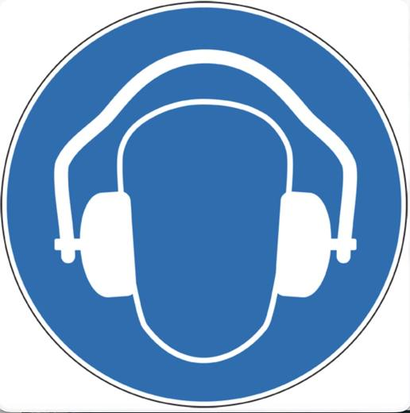

Situation — Chloé, apprentie coiffeuse

Chloé travaille dans un salon avec sèche-cheveux, musique et conversations. Le soir, elle ressent une fatigue et parfois un sifflement dans les oreilles.
Cours standard adapté : mêmes objectifs que le programme CAP, textes courts, questions guidées, indices, corrigés, explications concrètes et audio sur les blocs.
Lire dans l’ordre. Chaque document est suivi de ses questions. Les images aident à comprendre, mais le texte suffit pour répondre.
Utiliser les aides. Ouvrir l’indice pour démarrer, le corrigé pour vérifier, puis l’explication pour comprendre avec un exemple concret.
Traiter l’information : repérer une information utile dans un document.
Analyser une situation : comprendre le problème, les personnes concernées et les causes possibles.
Mettre en relation : faire le lien entre une information du document et une connaissance du cours.

Chloé travaille dans un salon avec sèche-cheveux, musique et conversations. Le soir, elle ressent une fatigue et parfois un sifflement dans les oreilles.
1. À partir de la situation,
1.1C2Identifier le problème de Chloé.
Chercher ce qui agit sur ses oreilles et sa fatigue.
Chloé est exposée au bruit et ressent une gêne auditive.
Exemple : un sifflement après une journée bruyante peut être un signe d’alerte pour l’audition.
1.2C2Relever deux sources de bruit dans la situation.
Chercher les objets ou activités qui produisent du son.
Sèche-cheveux, musique, conversations.
Exemple : plusieurs bruits moyens additionnés peuvent rendre l’environnement fatigant.
L’intensité du son se mesure en décibels, notés dB. Plus l’intensité est élevée, plus le son est fort.
La fréquence correspond à la hauteur du son : grave ou aigu. Un bruit devient dangereux selon son intensité, sa durée et la sensibilité de la personne.
2. À partir du document 1,
2.1C1Relever l’unité utilisée pour mesurer l’intensité sonore.
Chercher le symbole écrit après le mot décibel.
L’intensité sonore se mesure en décibels, notés dB.
Exemple : un aspirateur et un concert n’ont pas le même nombre de décibels.
2.2C3Expliquer pourquoi la durée d’exposition compte.
Penser à une exposition courte et à une exposition toute la journée.
Plus on reste longtemps exposé à un bruit fort, plus le risque pour l’audition augmente.
Exemple : entendre un bruit fort une seconde n’a pas le même effet que travailler plusieurs heures près d’une machine bruyante.
Traiter l’information : repérer une information utile dans un document.
Mettre en relation : faire le lien entre une information du document et une connaissance du cours.
Le son entre par l’oreille externe, fait vibrer le tympan, passe par l’oreille moyenne puis atteint l’oreille interne. Dans l’oreille interne, des cellules sensorielles transforment les vibrations en message nerveux envoyé au cerveau.
Ces cellules sont fragiles. Quand elles sont détruites, elles ne repoussent pas.
1. À partir du document 2,
1.1C1Remettre le trajet du son dans l’ordre.
Partir de l’entrée du son et finir par le cerveau.
Oreille externe → tympan → oreille interne → cerveau.
Exemple : le cerveau interprète le message nerveux ; c’est lui qui permet de reconnaître une voix ou une alarme.
1.2C3Expliquer pourquoi il faut protéger les cellules de l’oreille interne.
Chercher ce qui arrive quand ces cellules sont détruites.
Elles sont fragiles et ne repoussent pas quand elles sont détruites.
Exemple : une perte auditive après des expositions répétées peut être définitive.
Les effets auditifs touchent directement l’audition : baisse de l’audition, sifflements, acouphènes.
Les effets extra-auditifs touchent d’autres fonctions : fatigue, stress, difficultés de concentration, troubles du sommeil.
2. À partir du document 3,
2.1C1Classer les effets du bruit.
| Effets auditifs | Effets extra-auditifs |
|---|---|
Auditif concerne l’oreille ; extra-auditif concerne le reste du corps ou du comportement.
Auditifs : baisse de l’audition, sifflements/acouphènes. Extra-auditifs : fatigue, stress, difficultés de concentration, troubles du sommeil.
Exemple : un acouphène est auditif ; être irritable après une journée bruyante est extra-auditif.
2.2C5Argumenter pourquoi le bruit peut gêner le travail.
Penser à la concentration et aux consignes de sécurité.
Le bruit gêne le travail car il fatigue et peut empêcher d’entendre une consigne ou une alarme.
Exemple : dans un atelier, ne pas entendre un avertissement peut augmenter le risque d’accident.
Mettre en relation : faire le lien entre une information du document et une connaissance du cours.
Proposer une solution : choisir une action adaptée à une situation.
Argumenter : donner une idée et l’appuyer avec une raison.
La prévention peut agir à la source : choisir un matériel moins bruyant, entretenir les machines, isoler une zone bruyante.
Elle peut aussi agir sur l’organisation : limiter la durée d’exposition, alterner les tâches, informer les salariés. Les protections individuelles, comme les bouchons ou casques antibruit, complètent les protections collectives.
1. À partir du document 4,
1.1C3Classer les mesures de prévention.
| À la source | Organisation | Protection individuelle |
|---|---|---|
Se demander si la mesure agit sur le bruit, sur le temps de travail ou sur la personne.
Source : matériel moins bruyant, entretien. Organisation : limiter la durée, alterner. Protection individuelle : bouchons ou casque.
Exemple : un casque protège la personne, mais une machine moins bruyante protège tout le monde.
1.2C4Proposer deux actions pour Chloé.
Choisir une action collective et une action individuelle si possible.
Baisser le volume de la musique, entretenir les appareils, alterner les tâches, porter une protection si nécessaire.
Exemple : réduire le volume sonore du salon agit avant que le bruit n’atteigne l’oreille.